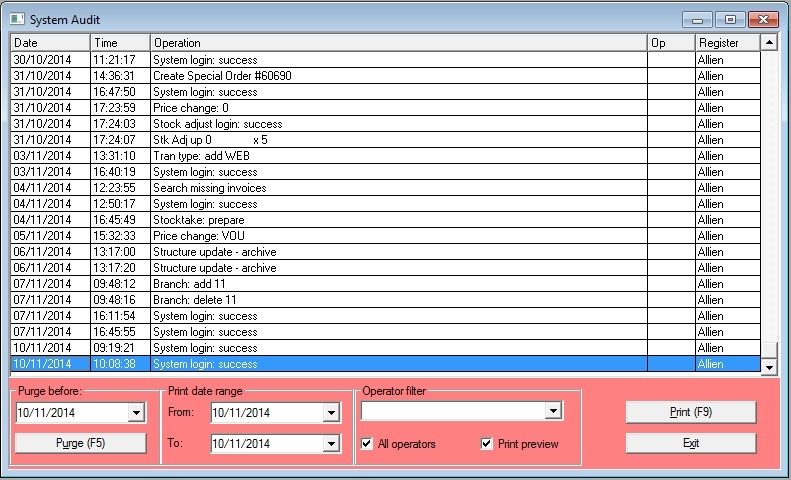

In this window you can see the contents of the audit log. Print a date range from it and purge old audit records.
When an operator performs a task that creates transaction, the operator code is recorded against the transaction ( e.g. an invoice or a cash sale). However not all tasks result in the creation of a transaction, for example deleting a special order or closing sales for the day. In these cases a record is created in the audit log and the date, time, operator, register and the details of the task are recorded.

If it gets too large you will be prompted to purge it for better performance any window that writes to it. (Particularly noticed as lag between making a sale & the docket printing.)
To Purge the archive of old records, select a date at least one month in the past, then click on the Purge button. This will mark all the records in the file up to that day as deleted. To remove them fully run Pack Tables from the Utilities / Database Utilities menu. This removes the deleted records and will restore the system performance.
To Print records, select a date range and then click on the Print (F9) button.
To see transactions made by a particular operator, select their code from the drop down list. You must have Use operator IDs selected in the Sales tab of the System Options to use this.
print preview allows you to preview the report and choose whether or not you print it.